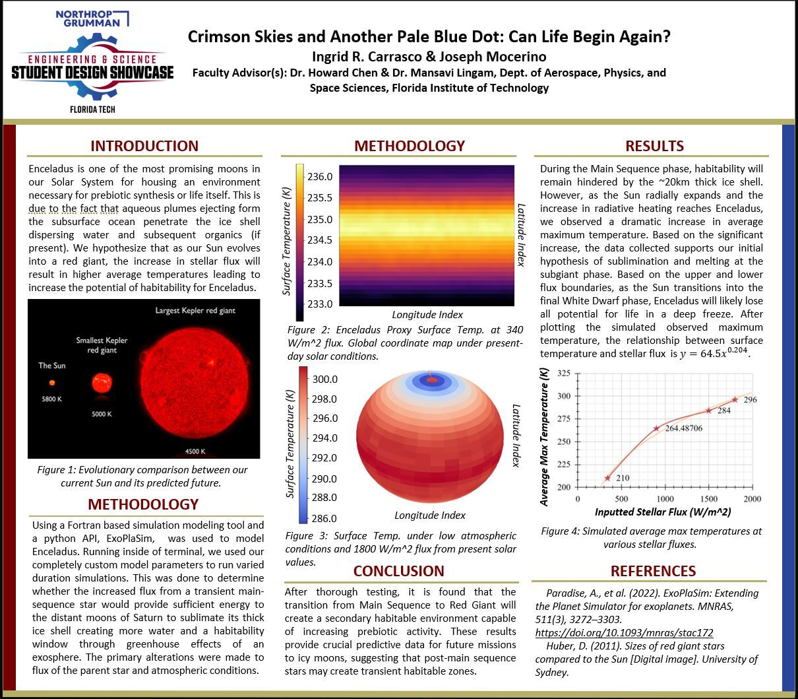

Planetary worlds, changing climates, and geophysical systems.
I am interested in how planets and moons evolve over time, especially how atmospheric, geological, and stellar processes influence whether environments can become, remain, or return to being habitable.
My background includes exoplanet habitability modeling, astronomical observing, spectroscopy, instrumentation, semiconductor testing, and student research leadership.
Research Areas
Exoplanet Habitability
Modeling how planetary and icy satellite environments respond to changing stellar radiation and long-term climate evolution.
Geophysics
Studying the physical processes that shape planetary interiors, surfaces, materials, and environmental evolution.
Instrumentation
Experience with spectroscopy, telescope systems, optomechanical alignment, semiconductor testing, and observational tools.

Current Direction
This site documents my academic work as I transition into graduate study in Earth sciences and geophysics. I plan to use this space for research summaries, project updates, presentations, outreach work, and selected academic materials.
Selected Experience
- Exoplanet habitability evolution research
- CERN CMS Inner Tracker testing
- Lightning detection spectroscopy for exoplanets
- Ortega Observatory outreach and telescope operation
- ARES student research leadership